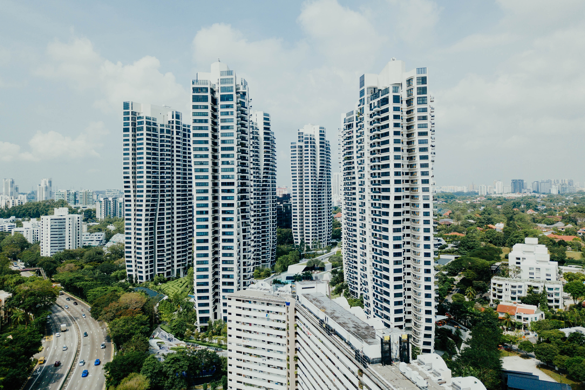

- 아파트
- 주택
- 투룸
- 원룸
부동산
"부동산" 이란 토지와 그 정착물을 말합니다(「민법」 제99조제1항)
“정착물”이란 토지에 부착하여 그 부착된 상태대로 계속적으로 사용되는 사회통념상 그 성질이 되는 물건을 말합니다
20억 원 넘던 전용면적 76㎡가 지난달 17억 원대까지 떨어진 급매물이 나왔지만 최근엔 다시 올랐습니다.
[<서울 강남 공인중개사 : 급매물이 나왔었어요. 그런데 급매물을 싹 거둬들이는 것이 종합부동산세 (개정안) 상정이 안 되고 보류가 됐다(고 해서…)]
올해 종합부동산세 세율을 올리지 못할 가능성이 커지자 급매물이 줄었다는 얘기입니다.
종합부동산세는 양도세와 함께 다주택자를 압박하는 대표적인 세금입니다.

정부는 지난해 강남 집값이 들썩이자 다주택자와 비싼 집에 사는 1주택자의 종부세율을 0.1%p에서 최대 0.8%p 높이기로 했습니다.
이대로라면 공시가격이 20억 원인 다주택자는 올해 종합부동산세를 지난해보다 342만 원 더 내야 합니다.
하지만 이 같은 종부세 강화 법안은 국회 첫 관문인 기재위 조세소위 문턱조차 넘지 못했습니다.
미래통합당은 강화안에 반대하고, 여당인 민주당은 원안을 고수하면서입니다.
종부세 부과 기준일이 다음달 1일인 점을 감안하면 올해부터 강화된 세율을 적용하겠다는 정부 계획도 사실상 무산될 것으로 보입니다.
정부는 20대 국회 임기 만료로 법안이 폐기되면 하반기 21대 국회에서 같은 법안을 다시 발의할 계획입니다.